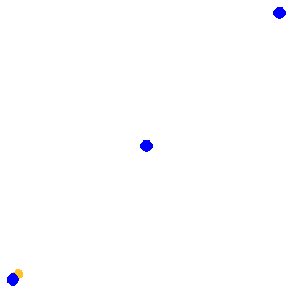

Zuspiel
Technick
Viereck zu Dritt
Drei Spielende bilden ein Viereck, wobei eine Ecke frei bleibt.
Varianten
- Einfachere Variante ist mit Zwischenspiel
Übungsziele
- auf die Position zum Ball achten
- Ausrichtung des Spielers zum Ziel
Zielspiel auf ein Ziel
Speziell für kurze Bälle. Trainer*in steht auf einem Kasten und hält ein Ziel, auf dass mit hoher Frequenz zugespielt wird.
Pritschen im sitzen
Um das Zuspiel aus neutraler Position zu üben empfiehlt es sich auf einer Kiste sitzend zu Pritschen um die Bewegung des Körpers rauszunehmen.
Dreiecksspiel (Peripheres Sehen)
- Spieler*innen bilden ein Dreieck und spielen den Ball.
- einzelne Spieler*innen nehmen sich selbst aus dem Spiel in dem sie in die Knie gehen
- die anderen Beiden müssen entsprechend reagieren und auf die freie Person spielen oder zu sich selbst
Zuspieler reagiert auf Block
Vorbereiteung
- Zwei Fänger*innen am Netz und dazwischen ein Zuspieler.
- Eine Person zum Blocken auf der anderen Seite des Netzes.
- Ein bis zwei Anspieler*innen.
Ablauf:
- Anspieler spielt zum Zuspieler
- Blockspieler bewegt sich
- Zuspieler spielt zum freien Fänger
- Fänger spielt zum Anspieler
- Anspieler wieder zum Zuspieler.
- usw.
Links
Zuspiel mit Patrick Steuerwald